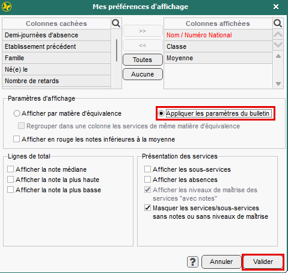
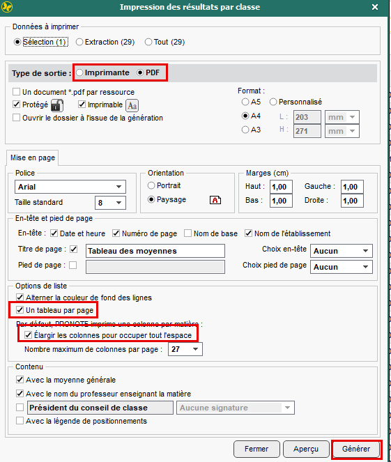

Résultats et bulletins
Imprimer ou enregistrer les résultats d’une classe
Gardez PRONOTE ouvert et réalisez les étapes ci-dessous.
Télécharger le PDF · 2 pagesAfficher le tableau
- Cliquez sur l’onglet Résultats (flèche 1).
- Cliquez sur l’icône Tableau des moyennes (flèche 2).
- Choisissez la période, puis la classe dans la liste de gauche (flèche 3).
- Cliquez sur la clé à molette en haut à droite du tableau (flèche 4).

Appliquer les paramètres du bulletin
- Dans la fenêtre ouverte avec la clé à molette, cochez Appliquer les paramètres du bulletin.
- Cliquez sur Valider.


Imprimer ou créer le PDF
- Cliquez sur l’icône Imprimer en haut à gauche de PRONOTE. Elle est encadrée en rouge sur la capture de l’étape 1.
- Dans Type de sortie, choisissez :
- Imprimante pour imprimer sur papier ;
- PDF pour créer un fichier.
- Cochez Un tableau par page et Élargir les colonnes pour occuper tout l’espace.
- Cliquez sur Imprimer ou Générer en bas à droite.


Le nom du bouton dépend de votre choix : « Imprimer » pour le papier, « Générer » pour le PDF.